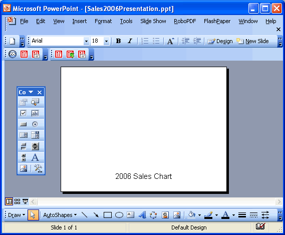
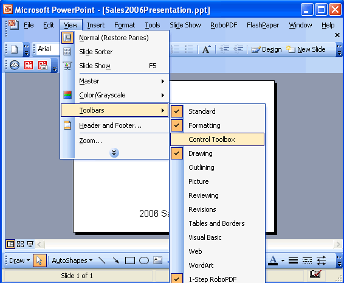
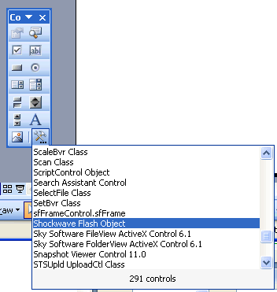
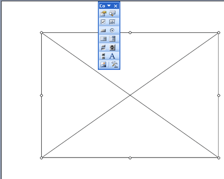
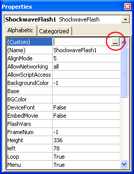
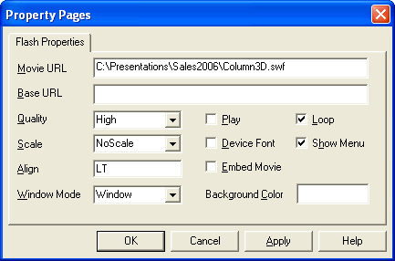
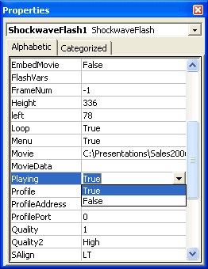
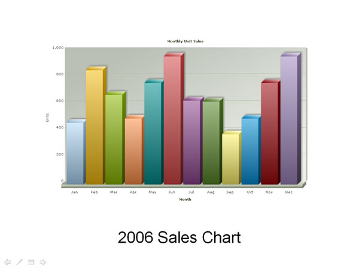

How to use FusionCharts in PowerPoint? |
In this section, we'll actually use FusionCharts in PowerPoint presentations. |
| Setting the folder for Presentation |
To use FusionCharts in PowerPoint presentation, you need to keep a central location for your presentation containing the charts. This location reference shouldn't change even if the presentation is transferred from one machine to another. For e.g., if you're building the presentation in C:\Presentations\MyNewPresentation on Machine 1, the path should stay the same on Machine 2 too, if you want to port the presentation. This is because Shockwave Object uses absolute reference for path of SWF objects. For our example, we'll create a new folder C:\Presentations\Sales2006. |
| Copying the charts |
| Now, put the required chart SWF files in this folder. You just need to copy the SWF files of the charts that you intend to use in the presentation. For our first example, we'll plot a simple 3D column chart to represent monthly sales data for a company. So, we copy Column3D.swf to this folder. |
| Preparing your chart data |
Now, that you're prepared for the roll, you need to build the XML data for the chart, as FusionCharts accepts only XML data. Create a file named as Data.xml (strictly Data.xml) with the following XML and save it in the same folder (C:\Presentations\Sales2006). If you're unsure about FusionCharts XML, please see the "FusionCharts and XML" section in this documentation. |
| <graph caption='Monthly Unit Sales' xAxisName='Month' yAxisName='Units' showValues='0' decimals='0' formatNumberScale='0'> <set label='Jan' value='462' /> <set label='Feb' value='857' /> <set label='Mar' value='671' /> <set label='Apr' value='494' /> <set label='May' value='761' /> <set label='Jun' value='960' /> <set label='Jul' value='629' /> <set label='Aug' value='622' /> <set label='Sep' value='376' /> <set label='Oct' value='494' /> <set label='Nov' value='761' /> <set label='Dec' value='960' /> </graph> |
| The above XML basically contains monthly sales data for 2006. |
| Setting the PowerPoint Presentation |
Now we get to the main part where we create the actual presentation. Create a new Presentation and save it as Sales2006Presentation.ppt and save it in the same folder (strictly required). For the sake of simplicity, we'll embed the chart in the first slide itself. Before that, let's add a label to the first slide and name it as "2006 Sales Chart" as under: |
|  |
| We'll add the chart above this label. To embed the chart, open the "Control" toolbox from View Menu (as shown below). |
|  |
| At the bottom of the Control toolbox, you'll see an icon for "Other" controls. This icon looks like a little hammer. Click on it to get a list of available controls. (See below) |
|  |
Select "Shockwave Flash Object" from this menu. There may be other "Flash" or "Shockwave" related components on your machine. It is imperative that you choose this object. Otherwise, the embed will not work. Your cursor will now change to a crosshair. Create a rectangle on the slide by dragging the cursor. This rectangle would be the span of the control - i.e., the chart would appear within this control. So, make the box of the size you want the chart to be. This can be full-screen or a portion of the screen. You'll see a cross being generated on your slide (as under): |
|  |
| Right click on this cross and from the context menu, select Properties. You'll see a Properties Dialog box as under: |
|  |
| To select the chart .swf file, click on the Ellipses button (circled above). You'll now be presented with a dialog box as under: |
|  |
As you might already be feeling, most of the options here are pretty familiar. The first textbox asks you to punch in URL of the chart SWF. Here, you'll need to hard-code the full path of the .swf file. Even though we've the .swf file in the same folder as the .ppt file, we'll still need to give the full path (c:\...\...\chart.swf). You need to put this only as Movie URL and NOT Base URL. Since we're using default Data.xml file for this example, so we do not need to provide any dataURL for this example. FusionCharts will automatically read XML data from Data.xml present in same folder. Select the other properties and click on Ok. Now, when you come back to the Properties window, you'll see the Playing property is set to False. You'll need to set it to true for the chart to appear and animated, during the slide show. Also, when you close this presentation and re-open it, you'll again find that this property has been set to False by Powerpoint. So, though irritating, you'll need to set this property back to true each time you open the .ppt file. |
|  |
Also, set the intended width and height of the chart in this dialog box itself. Finally, save and run your slide show in presentation view. You'll see the chart as under. If the chart doesn't show up, right click on the place where the chart is supposed to be and select Play from the context menu. |
|  |
| Re-opening the Presentation |
| When you close and re-open this presentation, you'll see that PowerPoint has again set the Playing property of the chart to false. You'll need to set it to True each time you open this presentation again. Or, you can opt to play the chart by right clicking on it during view mode and then selecting Play. |